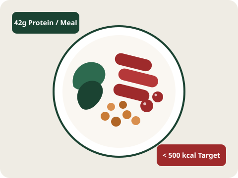

Protein Leverage
Anchoring every meal with 28g to 45g of lean animal or plant protein triggers satiety hormones early and protects lean muscle mass during a calorie deficit.
You do not have to choose between bold culinary flavor and lean body composition. Savor & Lean pairs high-satiety protein targets with smart calorie density so every meal keeps you full and energized.

Practical habits that eliminate guesswork without tracking every gram forever.
Anchoring every meal with 28g to 45g of lean animal or plant protein triggers satiety hormones early and protects lean muscle mass during a calorie deficit.
Pairing high-fiber legumes, leafy greens, and whole grains with seared proteins expands plate volume so you eat generous portions for fewer calories.
Smoked spices, citrus zest, fresh herbs, and measured healthy fats replace heavy cream sauces—delivering restaurant-level flavor in under 25 minutes.
Small kitchen upgrades that save 150 to 250 calories per plate while boosting protein.
| Standard Ingredient | Savor & Lean Swap | Macro Advantage |
|---|---|---|
| Heavy Cream Sauce (60 ml) | Blended White Beans & Garlic Broth | -165 kcal • +6g Protein |
| 3 Whole Eggs Scramble | 1 Whole Egg + 180g Liquid Egg Whites | -55 kcal • +8g Protein |
| Refined White Pasta (100g dry) | Red Lentil & Zucchini Ribbon Blend | -140 kcal • +11g Protein |
| Sugary Chocolate Pudding | Avocado, Raw Cacao & Plant Protein Mousse | -120 kcal • +18g Protein |